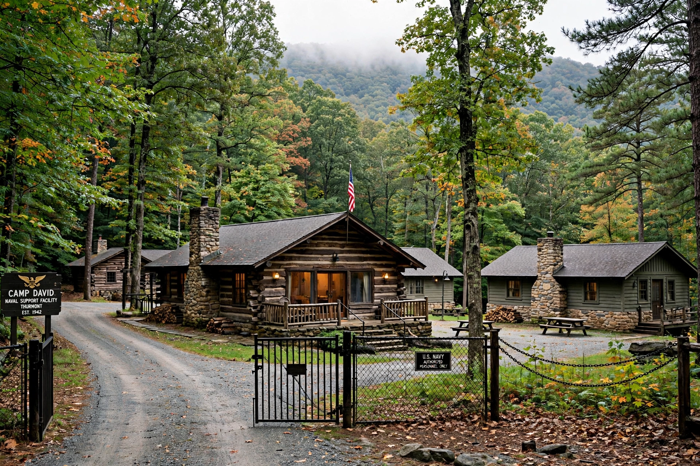

Camp David is the country retreat for the president of the United States, located in Catoctin Mountain Park in Frederick County, Maryland, about 100 km northwest of Washington, D.C. Its official name is Naval Support Facility Thurmont.
| Camp David | |
|---|---|
 | |
| Location | Catoctin Mountain Park, Maryland |
| Established | 1935–1938 |
| Named for | David Eisenhower |
Built by the Works Progress Administration in the 1930s, the camp was adapted by Franklin D. Roosevelt in 1942 as the presidential retreat "Shangri-La". Dwight D. Eisenhower renamed it Camp David after his grandson and father. Presidents have used it for rest, informal meetings and high-stakes diplomacy.
The site gave its name to the 1978 Camp David Accords between Egypt and Israel brokered by Jimmy Carter, and hosted the 2000 Camp David Summit between Bill Clinton, Ehud Barak and Yasser Arafat. It has also hosted G8 summits and meetings with British, Russian and other leaders. The main lodge is Aspen; cabins are named for trees.
Recreated from memory.